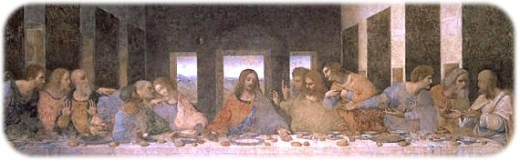
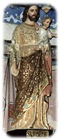
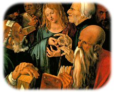
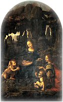

| Vie privée | ||
|
Pour Jésus, qui était vraiment Marie-Madeleine ?
Les Évangiles présentent la sœur de Marthe et de Lazare comme une pécheresse, une prostituée, une femme possédée que Jésus délivre du Mal. Pourtant, elle brûle d'amour pour Lui. Elle est sa compagne, sa disciple bien-aimée, l'apôtre des apôtres. Elle pleure au pied de la Croix. et au tombeau, elle est la première à qui il apparaît, ressuscité. Pour certains, elle s'est refugiée dans le Sud de la France après la mort de Jésus, emportant avec elle le Graal, la Coupe sacrée qui recueillit le sang du Christ. Pour d'autres, elle est elle-même le Graal, porteuse de la descendance de Jésus ; ceux-là affirment que l'expression « Sangreal », employée dans les premières versions des romans qui lui sont consacrés, ne devaient pas être découpée en « San Greal » qui donna Saint-Graal, mais plus justement en « Sang Real » qui veut dire Sang Royal. L'hypothèse faisant de Marie-Madeleine l'épouse de Jésus, ou du moins sa disciple la plus importante – plus importante que Pierre – se perd dans la nuit des temps. Mais elle a gagné de nouveaux adeptes depuis la découverte, en 1945, près de Nag Hammadi, en Égypte, de 46 documents remontant au IIe siècle. Parmi eux, des fragments de récits dont l'existence n'était connue jusque-là que d'une poignée d'universitaires et d'experts bibliques : Évangile de Pierre, Évangile de Philippe... et Évangile de Marie. En réalité, avec l'autre Marie, mère de Jésus, Marie-Madeleine est la femme la plus présente du Nouveau Testament. Elle est le premier témoin de la résurrection de Jésus ce qui, déjà, lui donne une importance considérable. Il y a consensus parmi les théologiens pour la décrire comme l’une des plus importantes disciples du Christ et quelques historiens de l'art ont même prétendu que c'est elle qu'on peut voir, à sa droite, dans le tableau de Leonard De Vinci, La Dernière Cène, censé être le dernier repas de Jésus avec ses apôtres avant son arrestation (voir ci-dessous).  Site Internet : Article de Christian Doumergue intitulé « Marie-Madeleine, la Reine Oubliée » |
||
|
La virginité perpétuelle de Marie est-elle un fait « certain » ?
La Bible nous prouve que ce dogme (officialisé lors du Concile de Trente -1545-63- où Marie est aussi déclarée « sans péché ») est erroné : Matthieu (13:55) et Marc (6:3) sont très explicites et affirment que Jésus avait des frères et des sœurs. Marc (16:40-47) précise même que Jacques-le-mineur n'est autre que le fils de Marie, mère de Jésus. L'Église catholique a toujours expliqué cela par le fait que d'après eux, « frère » signifie en fait « cousin ». Or, en grec, langue dans laquelle fut rédigée la Bible, si « frère » (adelphos) peut représenter un parent, il n'en est rien pour « sœur » (adelphé) ; pour signifier « cousine, parente », il aurait fallu employer le mot anepsios. D'ailleurs, à propos d'une sœur, Matthieu précise que « celle-ci est née de la même mère » (13:56). | ||
|
Qui était le vrai père de Jésus ?
Dans la Bible, il n'est écrit nulle part que Jésus était d'origine modeste. La seule mention des origines sociales de Jésus est celle de l'apôtre Paul : « Car vous connaissez la grâce de notre Seigneur Jésus, qui pour vous s'est fait pauvre, de riche qu'il était, afin que par sa pauvreté, vous soyez enrichis » (II.C. 8-9). Cela contredit la théorie faisant de Jésus le fils d'un pauvre charpentier. Qui était donc son vrai père ? On sait que Jésus n'est pas né à Nazareth qui n'existait pas à son époque et on sait également que lors de sa crucifixion, l'inscription I.N.R.I. clouée sur sa croix ne veut pas dire « Jésus le Nazaréen (de Nazareth), roi des Juifs » mais « Jésus le Nazoréen, roi des Juifs ».  Juda de Gamala était marié à une princesse de Gamala, Marie, que les Écritures transformèrent injustement en Marie de Magdala (en effet, cette ville ne fut inventée qu'au quatrième siècle en débaptisant Tarychée en Magdala). Ils eurent sept enfants, dont quatre garçons : Jésus et Thomas, les jumeaux, Simon-Pierre et Jacques. On dit alors que Jésus, « le fils premier-né de Marie » (Luc, 2:7), était né d'une vierge, comme on avait coutume de désigner à l'époque un enfant né d'une mère restée vertueuse jusqu'au mariage.Dans son Évangile, Matthieu parle de ces enfants : « car quatre garçons et des filles naquirent à Joseph et Marie » (13:54-56). Mais pourquoi a-t-on remplacé Juda de Gamala par Joseph ? C'est en 325, lors du Concile de Nicée, que l'Église proclame le dogme de la Trinité et fait de Jésus un « fils de Dieu ». A une époque où elle veut séduire l'empire Romain majoritairement mithraïste malgré la récente conversion de son empereur Constantin, elle ne peut faire état de ce père génétique qui était l'ennemi juré des Romains. Elle invente donc un père adoptif dont le nom, Joseph, a été choisi en se basant sur une interprétation erronée d'une parabole de Zacharie : « J'affirmerai le courage de la maison de Juda, et je sauverai la Maison de Joseph » (10:6).
Pour la petite histoire, ce serait parce que Juda de Gamala était mort et que Joseph n'a jamais existé que Léonard de Vinci (encore lui), chargé de peindre la fuite en Égypte de la sainte famille, n'a pas représenté Joseph dans la première version de son tableau « La vierge aux rochers », qui se trouve au Louvre. |
||
|
Que fit Jésus jusqu'à 33 ans ?
 Jésus , fils de Juda de Gamala et de Marie, a reçu une éducation princière, cela explique sa grande érudition et sa parfaite connaissance de la Torah qui étonne les docteurs de la Loi lors de son examen de majorité religieuse qu'il passe à 13 ans (bar-mitsva).En l'an 6, après la mort de Juda de Gamala, Marie, la mère de Jésus, est recherchée par les Romains qui avaient l'habitude d'exterminer toute famille royale ayant participé à une rébellion : « Dans sa fureur contre la femme (Marie), le dragon (l'Empire Romain) porta le combat contre le reste de sa descendance » (Apocalypse, 12:17). Avec ses enfants, elle fuit donc vers l'Egypte. La famille s'enfuit d'abord dans le désert, chez les Esséniens où un refuge avait été préparé : « Alors la femme s’enfuit au désert, où Dieu lui a fait préparer une place, pour qu’elle y soit nourrie mille deux cent soixante jours » (Apocalypse, 12:6). Cette femme dont il est question est incontestablement Marie car il est précisé « qu'elle a mis au monde un enfant mâle qui doit mener paître toutes les nations avec une verge de fer » (Apocalypse, 12:5). Après les trois ans et demi passés dans le désert chez les Esséniens, Jésus qui avait alors 16 ans, et les siens, allèrent en Egypte, probablement à Alexandrie dont le rayonnement culturel était immense, et qui abritait une très importante communauté juive (deux quartiers sur cinq). Jésus fut initié à la Kabbale et acquit de nombreux « Pouvoirs ». Cependant, il ne put rester ignorant de la religion du pays d’accueil, ni indifférent aux « Mystères » égyptiens qui enseignaient, comme les Esséniens, l’immortalité de l’âme et la purification par les bains. Il découvrit le mythe de la résurrection d’Osiris en trois jours et fut très probablement initié à la magie égyptienne interdite et punie de mort par la Torah : « La magicienne, tu ne la laisseras pas vivre. » Exode 22(18). Plusieurs récits, déclarés apocryphes par l'Église, comme l'Évangile de Thomas, rapportent que Jésus a eu et exercé des pouvoirs magiques pendant son enfance. Jésus qui avait été condamné par contumace par les Romains était toujours obligé de se cacher d'eux en Égypte occupée. Il se fit donc appeler Bar-aba qui signifie à la fois « fils du père » et « fils caché ». Il a peut-être voyagé en Orient pour leur échapper.  Au début des années 30, Jésus rentre dans son pays natal, la Galilée, pour essayer de récupérer ses biens. La parabole des mines et la parabole des talents pourraient être des allusions de Jésus à la fortune familiale confiée à de fidèles serviteurs lors de la fuite en Egypte afin d’éviter sa confiscation, et de la faire fructifier. Jésus veut également reprendre la direction du parti de son père, le mouvement nazoréen. Pour ce faire, il regroupe autour de lui des fidèles compagnons d'armes, indifféremment appelés siccaires ou zélotes. Il rencontre alors son cousin, Jean-le-Baptiste, fils d'Elisabeth, sœur de Marie, pour préparer son entrée dans Jérusalem. Jean-le-Baptiste était un prêtre Essénien et, comme tous les Esséniens, il considérait les prêtres du Temple comme des usurpateurs ; de plus, ils les détestait car ils avaient assassiné son père, Zacharie. Des textes trouvés à Qumrân font état de l'attente de deux Messies (qu'il faut traduire par « libérateurs ») : un messie-prêtre (Jean-le-Baptiste), descendant d'Aaron, se présentant comme le « Maître de vertu », et un messie-royal (Jésus), descendant de David, chargé de purifier par le feu et le sang le royaume d'Israël.C'est en 36, dans sa demeure de Béthanie, que Jésus fut symboliquement oint par Jean-le-Baptiste, obtenant ainsi le titre de Christ, c'est-à-dire de roi. Il organisa alors son entrée triomphale à Jérusalem afin qu'elle corresponde à la prophétie (épisode de l'ânon) puis se rendit au Temple. A la tête des troupes zélotes, Jésus entraina ensuite les Samaritains sur le mont Garizim, leur montagne sacrée, où ils furent surpris et écrasés par les troupes romaines de Ponce Pilate. Jésus et ses proches s'échappèrent et se réfugièrent dans la forêt du mont des Oliviers, à l'entrée de Jérusalem. c'est là qu'ils furent arrêtés peu de temps après par une cohorte de soldats romains accompagnés d'huissiers juifs. |
||